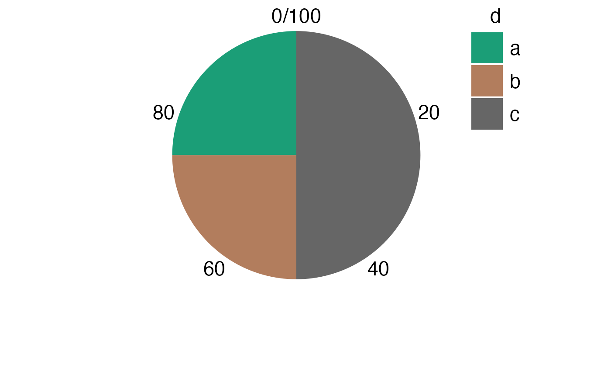
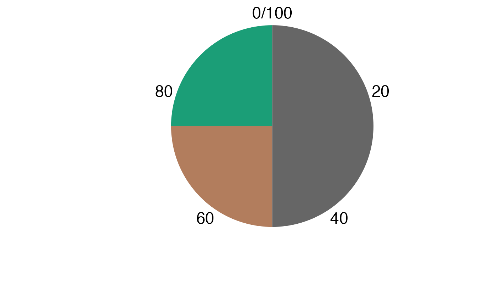
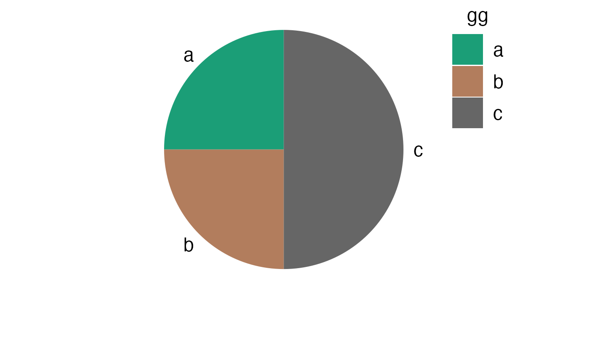
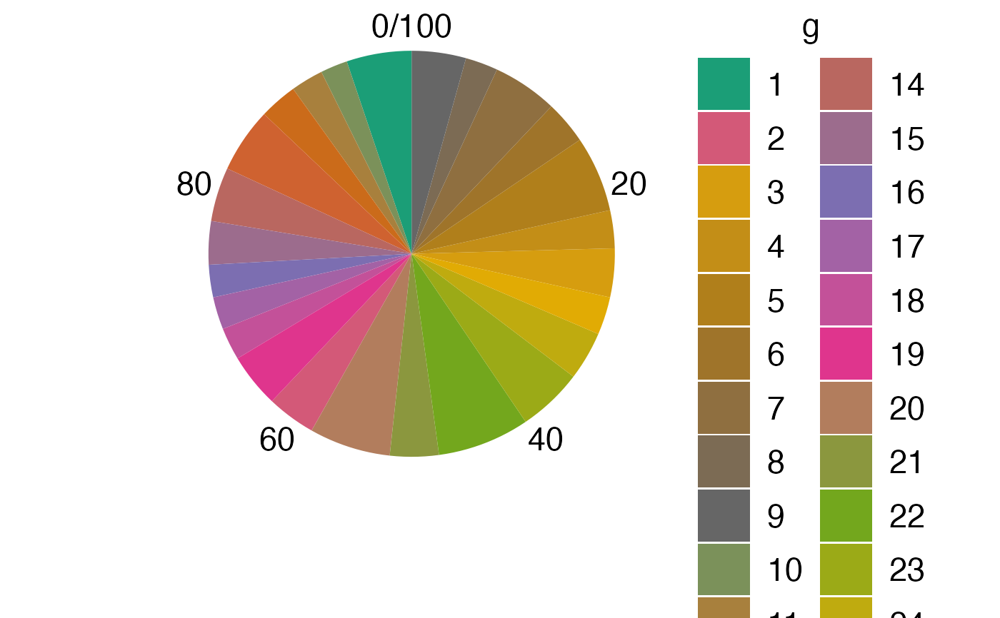

plotPieChart.RdMake a Pie Chart
plotPieChart(
value,
group,
legendName = deparse(substitute(group)),
legendLabels = if (is.factor(group)) levels(group) else unique(group),
legendColors = NULL,
showAxisText = TRUE,
showAxisTicks = showAxisText,
asPercentages = TRUE,
palette = getGraphOption("palette"),
...
)The value for each group.
Character of factor that indicates which value belongs to which group.
Character, title of the legend.
Character vector with names for the legend.
Character vector with colors.
Logical, should the axis text be shown?
Logical, should the ticks on the polar coordinates be shown?
Logical, should value be transformed to percentages? Recommended to be true.
Character vector with palette name. If this option is set then legendColors is ignored. If palette is NULL then legendColors are used.
Arguments to be passed to themeJasp.
a ggplot object.
library(ggplot2)
value <- c(25, 25, 50)
gg <- letters[1:3]
ga <- letters[4:6]
g <- plotPieChart(value, gg)
print(g)
plotPieChart(value, gg, ga)

plotPieChart(value, gg, ga, showAxisTicks = FALSE)
plotPieChart(value, gg, ga, showAxisTicks = FALSE, legend.position = "none") # hide the legend

# axis can still be modified
print(g + scale_y_continuous(breaks = c(50, 75, 0)))
print(g + scale_y_continuous(breaks = seq(0, 100, 10)))
cm <- c(0, cumsum(value))
breaks <- 100 - (cm[-1] + cm[-length(cm)]) / 2
print(g + scale_y_continuous(breaks = breaks, labels = gg))

# something more extreme:
value <- rpois(25, 10)
g <- as.character(seq_len(25))
plotPieChart(value, g)
